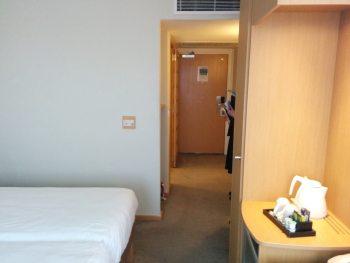

We’re running at the Novotel London West in Hammersmith. We have step-free access, accessible toilets, gender neutral toilets, designated quiet space, car parking, and kid-friendly content. There are long breaks between sessions, and attendees can enter and leave sessions as they like. We believe that this venue is mostly accessible, and a substantial improvement on previous venues.
We recognise that people have a diverse range of needs due to impairment, disability, chronic health issues, or neurodiversity. We know that it is not always easy to meet everyone’s needs perfectly. However, we aim to go beyond our legal obligations under the Equality Act 2010, and work to make Nine Worlds as accessible, welcoming and inclusive as possible. We know that we won’t always get everything right; we welcome feedback and undertake to improve accessibility each year.
We’re in the process of finalising access arrangements for 2018. If you have access needs, it would really help us to meet them if you could complete this brief survey:
The information you give will be sent to Samantha and Tes, our 2018 Access Co-ordinator and Deputy, who will help to meet your access requirements. If there's something you'd like to suggest that could improve accessibility at Nine Worlds, or if you have a question about access, please contact them by emailing access@nineworlds.co.uk or tweeting @9Waccess. They're also available online and in person at the event. We'll always do our best to help, but getting in contact earlier puts us in the best possible position to be able to meet access needs.
Access facilities and services
- Access Coordinator
- Registration
- Assistance
- Toilets
- Seating
- Priority seating
- Queuing and priority entry
- People with photosensitive epilepsy/seizures
- People with respiratory conditions, asthma, or sensory processing difficulties
- Quiet rooms
- Semi-quiet alcohol free social space
- Communication system
- Food arrangements
- Parking and transport
- Fire alarm and evacuation procedures
- Programme
- Parents and children
- D/deaf attendees
- Sight impaired attendees
- Neurodiversity
- Website
- Useful medical information
Venue layout and accessibility information
- Summary of the venue layout
- Entrances
- First floor - Champagne Suite - Cognac Suite - Hotel lobby
- Mezzanine level - Content rooms - Vendors hall
- Second floor - Content rooms - Quiet room
- Ground floor
- Moving between floors - Escalators - Stairs - Lifts
- Accommodation
- Other features - Toilets - Flooring - Doors - Lighting - Temperature - Noise - Smells - Distances
Access Coordinator
Nine Worlds will have a dedicated Access Coordinator, who will be available before the event, via Twitter (@9Waccess) and email (access@nineworlds.co.uk) to make arrangements for accommodations and adjustments for the event, to take suggestions and feedback and deal with any queries or concerns.
The Access Coordinator will send out a link to a survey, to collect information on access needs for the event.
The Access Coordinator will be available, both via Twitter and email, and in person, at the event, to coordinate access facilities, oversee arrangements and deal with any difficulties that may arise, including anyone who becomes distressed. The Access Coordinator will take and collate feedback regarding access arrangements after the event, and will ensure a handover of all such appropriate information, if the person undertaking the role changes. The Coordinator will provide accessibility information for the website, programme, and mail outs.
The Access Coordinator will check and deal with queries to the twitter and email accounts on a daily basis, subject to exceptional circumstances or illness disrupting this, and will also be available to liaise with other Nine Worlds and venue staff and volunteers. The Access Coordinator will undertake a site visit to the con hotel, and will be responsible for ordering and preparation of materials for access during the event, setting up and monitoring access arrangements during the event, and take down of these arrangements at the end of the event.
Registration
We will have a priority access queue at registration, which will have seats for while you are waiting. Please use this queue if you have difficulty standing, difficulty with crowds, or any other issue that might make registering difficult for you. If the registration area is overwhelming or difficult for you, we can arrange to register you somewhere quieter, please ask at the Info Desk. This may entail a longer wait than queuing at the Registration Desk. If you’d like someone else to register on your behalf, we can arrange this, but please contact access@nineworlds.co.uk to let us know both your and their name, so we can pass this to our registration team.
Assistance
We recognise that some people will require assistance to attend the event. We welcome assistance animals, and will be happy to provide water for them. The nearest green spaces to exercise assistance animals are 0.4 miles away (Frank Banfield Park and Brook Green).
If you require the assistance of a Carer or Personal Assistant in order to attend Nine Worlds, we can offer a complimentary ticket to facilitate this. Please contact the Access Coordinator prior to the event to arrange this, including your name, email address used for booking your ticket, and when possible, the name of your PA and email address (we recognise that this may not be possible in advance or may vary over the weekend, please contact is to discuss if this is the case for you.)
Toilets
The venue has accessible toilets. We recognise that these may be of assistance to people beyond wheelchair users, and encourage people to use these if it best meets their needs.
There are accessible toilets on all of the floors of the venue we will be using, and these will be unlocked for the duration of the event. These are a single gender neutral toilet on most floors, with an accessible toilet inside the ladies and gentlemen’s’ toilets on the first floor. Gender neutral toilets will be located on the mezzanine floor.


The accessible toilets have grab rails, sanitary bins suitable for larger pads, alarms, easy turn taps and full length mirrors, as well as red pullcords in case of emergency. Most of the accessible toilets are large enough to allow manoeuvring and for someone to assist transferring if required. None of the toilets meet Changing Places standards. There are no sharps bins in any of the toilets.
The non-accessible toilets on the first floor have frosted glass doors. While these cannot be seen through, we realise that they may make some people uncomfortable and they may wish to consider this when choosing which facilities to use.

There is an accessible baby changing table located in the accessible toilet on the mezzanine floor, and an inaccessible height changing table in the ladies’ toilets on the first floor.
We understand that people who are neurodiverse, have sensory processing difficulties, or multiple chemical sensitivities, may find it difficult to use toilets due to the use of perfumes etc. in the spaces. We will put up notices asking people to be aware of this and not to spray substances such as perfume or hairspray in the toilets that are solely for Nine Worlds use, including the accessible toilets.
Seating
Chairs in the rooms we are using are padded on the seat and back, and are full backed. Some have armrests, some do not. We have requested a mixture of both types in all rooms. Please feel free to bring a cushion if this would make you more comfortable. We have purchased a very small number of cushion and mesh back supports; these will be available to be borrowed from the quiet room.


There are arm chair type chairs in a number of foyer areas around the hotel.
Priority Access Seating
We recognise that some attendees need access to a seat, or a seat in a particular location, due to access needs. We will provide attendees with a Priority Seating sticker on their Nine Worlds badge to meet these needs.
Priority Seating will be labelled and make up not less than 10% of the seats in any space. Priority seats will be in a number of locations, to suit a variety of needs. Some will be near the front, some will be at the back, some will be on aisles, where you can leave easily or have extra space around you. We will ensure some priority seats are next to regular seats, we know you’d like to sit with your friends. An example priority seating chart will be prepared to aid room set up.
Seating labels will ask people to give up a priority seat to someone with a pass, even if other seats are available, and will remind people not all impairments are visible. We will ask that priority access seats are left available for those who need them for the first 15 minutes of programme items, after which, people without priority seating stickers are welcome to use them, although they may be asked to give up the seat if it’s needed by a priority access holder. There will be a very small number of chairs labelled “Priority Access Only”, in red, these will be near the doors to each room, and we ask that these are left free for priority access attendees at all times. Some people have access needs which mean they may need to arrive late or need to leave
sessions repeatedly. These seats are for their use, and as such, we ask that those without a priority seating pass refrain from using them at any time.
We will also provide wheelchair spaces in each room used, and will provide a small rug for each location, as we understand some people may find sitting on the floor more comfortable, due to pain or mobility issues. These will be at the front, due to line of sight issues.
If beanbags are to be used in a space, we will ensure some of these are labelled as priority seating, and we will provide some conventional chairs in the space, for those for whom beanbags are unsuitable.
We will prepare and use Room Full signs that indicate whether the room is full apart from priority seating, or full including all priority seating.
Queuing and Priority Entry
We understand queuing is difficult, painful or impossible for some attendees. We will ensure seats are outside rooms when we anticipate a queue, wherever this will not impede safe passage. Stewards will let people with a priority seating pass in first, where events are busy and queues are long.
People with photosensitive epilepsy/seizures and difficulties with lighting
There are no plans to use strobe lighting this year, however, we will be using lights capable of flashing during the following sessions in Cremant:
- Knightmare Live
- Disco on Friday
- What's the worst that could happen?
- Bifrost cabaret and disco
After feedback, the lighting facing the audience will have a section the lights do not sweep past or directly illuminate, and some chairs in this area will be labelled to indicate this, but flashing lights may still illuminate a section of the stage that people sat in these seats are looking at. These chairs will be reserved for priority access seating pass holders, and will be in the back section on the left, labelled in the diagram below.

The only points at which strobe like effects will be used directly on the audience is during the discos. Bright lighting may directly illuminate the audience during the bifrost cabaret, but it will not strobe, and is selected to be physically incapable of faster than about 0.5 Hz.
People with respiratory conditions, asthma, or sensory processing difficulties
Theatrical haze may be used during the evening entertainments in Cremant, at a level comparable to a foggy day (particle refractive index around 1.4). This may cause some difficulties for people with asthma and similar conditions. We recommend ensuring you have any inhalers or medication with you, potentially using any prescribed preventatives before entering the space, and leaving the area, should the haze affect you unduly. Haze is created using food grade glycol liquids in demineralised water. Further details are available from access@nineworlds.co.uk
These will be used during the following sessions in 2018:
- Questing time
- Videogame Burlesque
- Friday night lite
- Bifrost setup, cabaret and disco
- What Could Possibly Go Wrong?
- x8 Inductive neck loops - This receiver provides a personal induction loop system to assist hearing aid wearers with the “T” telecoil function and is worn around the neck.
- x2 Stethosets - This receiver can be used by non-hearing aid wearers and is worn on the ears.
- Ground: Coach lobby, step free access
- Mezzanine: Content rooms
- First: Hotel reception, restaurants, shop, Nine Worlds registration, content rooms
- Second: Content rooms, quiet room
Quiet rooms
We will provide a quiet room to enable people to take a break from the convention. Anyone is welcome to make use of this space, and the intention is that people can use it as a place where no-one else will talk to them or interact with them (so multiple people are most welcome, as long as they maintain that.) Please don’t use this space for socialising!
We will provide sensory activities and toys, including colouring, Sudoku, word searches, a weighted soft toy, and other sensory/fidget toys. The room will have soft furnishings, including bean bags, cushions, a weighted blanket, and a place to lie down. Ear plugs and mesh and memory foam back supports will also be available for collection from the quiet room.
We will also provide a water cooler and fruit bowl, so people are able to have a snack, even if they can’t face leaving the room and dealing with people.
The quiet room has large windows along one side, and is lit by both spot and panel lights, these are adjustable, and we encourage you to adjust these or turn them off, or raise/lower the blinds, as you require. We will provide soft lighting options. We are unable to provide more than one quiet room, and recognise that different people may have different needs regarding lighting etc. We will provide eye masks and ear plugs in the quiet room.
Alcohol Free Semi Quiet Social Space
We will have a medium room available as an alcohol free social space from 18.45 to 23.15 on Friday and Saturday evenings. This will be in Beaujolais. This is intended as a quiet social space, so please don’t play music or otherwise create excessive noise in here.
Communication System
We will be using a system to indicate communication preferences. We will once again be using coloured acetate overlays. These will put a vivid coloured stripe over the bottom third of your con badge, so will be highly visible, and in the same place for everyone. They will also be easy to change during the course of the event. The acetates will go over and around your con badge. The acetates will have a simple shape cut out of them, for anyone who has difficulty identifying colours.
A blue stripe over your badge with a star shape will indicate that you are actively seeking communication. This may be used because you have no communication difficulties, and love meeting new people, or you have difficulty initiating conversations, but would like people to initiate conversations with you. No distinction will be drawn between these, and the communication preference system will not be restricted to those with communication difficulties. We encourage all attendees to make use of the communication system, if they feel they wish to or would benefit.
A yellow stripe over your badge with a triangle shape will indicate that you only want to talk to people you already know, or if you initiate communication.
A red tinted stripe over your badge with a circle shape indicates that you don’t want any communication right now, except in an emergency.
Signs explaining the system will be placed in locations people linger, such as lifts and above wash basins in toilets. There is also a downloadable Word format poster.
Access Allies
Once again, we’ll be inviting people without access needs to actively help with inclusivity by wearing an Access Ally sticker on their con badge. This indicates that they are aware of the access facilities at Nine Worlds, and will help if they can. Hopefully this will reduce anxiety about approaching someone to, for example, give up a priority access seat.
People with access needs are, of course, welcome to also wear an Access Ally sticker, and there is room on your con lanyard for both this and a Priority Access sticker. However, if you have access needs and someone asks you for assistance which is incompatible with your own needs, please politely say you are unable to assist.
Food arrangements
We recognise that some people find it difficult to plan and manage to eat around the busy schedule. After success in previous years, we will be offering the option of a prebooked table in the on site eateries at meal times for those who would find this helpful, seated with other people who have opted for this. Please fill in the survey at the top of this page to express your interest in this option.
Sessions this year will have 45 minute breaks between them, hopefully that will help us all have time to eat and look after ourselves.
More information regarding the food and drink options and opening hours, can be found on our food page.
We will publish menus online in advance of the event.
Some of the hotel food options are buffet style; if this is difficult for you to manage (e.g. you find it difficult to carry, scoop, reach, etc), please ask the host/hostess on duty at the front of the restaurant area, and they will be happy to arrange for someone to assist you.
The hotel will provide water coolers in the convention space. Attendees may wish to bring a refillable bottle to use during the event.
Parking and transport
We recognise that some people may have been unable to secure a room in the main hotel, and this is important to some due to access needs. We will refund the costs of taxis between the main hotel and other agreed local accommodation, where this is agreed in advance with the Access Coordinator.
If you have access requirements and are staying off-site, Novotel's front desk will be happy to take care of any items you may need during the course of your day.
There are 6 accessible, blue badge parking bays in the hotel car park. These are first come, first served, and are chargeable at the con rate of £1.50 per hour. The underground car park is served by the main lifts, and also by two small lifts in the glass atrium at street level, and the foyer area of the hotel, which are the nearest lifts to the blue badge bays.
To access the blue parking bays, you need to enter via the coach entrance, and follow the ramp round to the right to get to the underground car park.


At the bottom of the ramp, you need to turn right, then follow the directions for the accessible car parking spaces, which take you left, then left again.


There are six wide blue bays.

To get to the small lifts, with you back to the blue badge bays, you go forward, then turn right. The lifts are through double doors.


We will have further information on accessible parking options in the accommodation and parking page elsewhere on the website, once it's been published.
We have further information on transport to the venue in our travel page elsewhere on the website.
Fire alarm and evacuation procedure
The hotel fire alarm is a very loud, continuous tone. There are no visual indicators of the need to evacuate, apart from in Cremant, where there are also red flashing lights. Hotel staff would check all convention spaces to ensure everyone is aware that an evacuation is in progress. For hotel bedrooms, the hotel have 3 deafguards onsite (vibrating pillows with flashing light) for the use of D/deaf guests staying at the hotel. These can be obtained from reception.
The hotel have Personal Emergency Evacuation Plan forms which can be completed on check in or obtained from the Convention Info Desk, for those not staying at the hotel. This will help the hotel to meet your needs.
The hotel have evac-chairs for wheelchair users and those who would be unable to use the stairs to evacuate. People needing assistance evacuating the building should make their way to the nearest stairwell in the event of an evacuation, and they will be assisted by Security or the Fire Brigade. The stairwells are protected refuge areas.
Programme
We will provide the programme in alternative, accessible formats, where this is requested in advance. This may include large print, audio, or on coloured paper, as well as electronic methods. We will outline accessibility arrangements in the programme.
D/deaf attendees
We will be welcoming two BSL interpreters, for those who would benefit from this. The interpreter’s time will be scheduled in advance, based on the preferences of those who indicate they need the service, in as fair a way as possible, and including breaks for the signer. We will provide a spotlight for the signer in Cremant for the evening entertainment, in the location indicated below. A small number of seats in this area will be labelled for the use of BSL users.
.png)
We will remind people presenting, moderating, or on panels to use the microphones provided, to try to refrain from covering their mouth or facing away from the audience, and to be aware that excessive noise may make it difficult for people to hear or concentrate. We will also remind anyone presenting that if the microphones or speakers aren’t working correctly, this constitutes an access issue and needs addressing immediately. Priority access seats will be available at the front of all spaces, to aid lip reading, seeing the signer etc. We will request any Powerpoint presentations be made available, where this may increase accessibility.
The main event hall has an inbuilt induction infrared system, with 6 infrared radiators to pick up the sound waves using the hotel’s hearing receivers. There are 17 receivers available at any one time, including both Stethosets and Telecoils. In addition to this, the hotel has 1 table mounted portable infrared system with a range of up to 400sq/m, ideal for use in any of our meeting rooms and suites. A static microphone is provided, which plugs directly into the system, ideal for picking up proceedings that occur around the infrared radiator.
For delegates with hearing impairments the hotel can provide the following receivers:
If you require any of these, please let us know well in advance by emailing access@nineworlds.co.uk so we can book equipment and plan a schedule for the portable system. The headsets can be collected and returned from the hotel reception desk.
Sight impaired attendees
We can provide the Nine Worlds programme in alternative formats, such as large print or audio file, where this is requested in advance. The programme is also available as a PDF, a webpage and as an customisable app for offline use. We will ask presenters to provide an electronic and/or paper copy of presentations where possible.
There will be priority seating at the front of every space we are using.
We will place signage on mirrors and glass walls/dividers, to aid those with depth perception or sensory processing issues.
Menus will be published online, and large print versions will be available.
Neurodiversity
We understand that large events can present challenges for our neurodiverse attendees. In addition to the facilities outlined elsewhere in this document, we will provide an outdoor non-smoking socialising space. This will be the patio area outside Cognac, as this is for sole use of Nine Worlds attendees.
We have provided detailed information, including sensory information on the hotel, (pictures, lighting levels, odours, floor surfaces, stairwells, lifts etc.)
If sensory processing issues or excess noise affect you, you are welcome to wear headphones to help with this. White noise, ambient noise and other noises are available for personal use free at mynoise.net. There will be a small stock of disposable ear plugs provided in the quiet room; please feel free to take a pair if this would help you.
We are aware that some people may struggle to identify people visually, due to face blindness and other difficulties. Our Access Coordinator will tweet what she is wearing, to help you find her, should you need to. If you ask any volunteer, they can get in contact with the Access Coordinator for you.
Website
We will aim to make our website as accessible as possible, and to include comprehensive accessibility information.
Useful medical information
The nearest pharmacy is 0.3 miles from the venue, Boots London Hammersmith West is at 29-30 Broadway Shopping Centre, London, W6 9YD. It opens 07:30-20:00 Monday to Friday, 08:30 to 19:00 on Saturdays, and 11:00 to 18:00 on Sundays. The pharmacy dispenses between the same times.
The nearest Walk In Centre is 0.8 miles away; Charing Cross Urgent Care Centre, at Fulham Palace Road, London W6 8RF. It is open 24 hours a day, seven days a week. The nearest Accident and Emergency Department is located at the same hospital.
Venue layout, including accessibility, sensory details and photos
The venue has four floors with social and convention spaces. We will mainly be using three of these. The floors, starting from the bottom of the building are:
General layout of the venue
The convention will run across three floors. Accommodation is on separate floors. There is an info desk in the convention area, in addition to the hotel's own front desk. Corridors are wide, and routes between rooms are direct and well signposted. There are multiple banks of lifts to all floors, plus stairs and escalators between the more high traffic areas. None of the event rooms are inaccessible to people with mobility issues.
The content rooms vary in size from small rooms suitable for workshops or quiet spaces to a main hall seating hundreds. There are numerous content rooms, social spaces, workshop rooms, and a vendors room. There will also be vendors in some of the main convention spaces, located in places where their presence won't unacceptably disrupt traffic.
One of the content floors is served by lifts that cannot fit the larger mobility scooter style of power wheelchair, and we have had to agree back-of-house service lift access to ensure access. Please ask a volunteer if you need access to this lift, and someone will show you the way.
If you have access requirements and are staying off-site, the Novotel's concierge will be happy to take care of any items you may need during the course of your day.
The venue facilities section below has substantial detail about access in each area within the convention space. Additionally, the access report at DirectEnquiries is very thorough indeed, and includes lots of photographs.
Entrances
There is significant public building work surrounding the Novotel, which will be ongoing during the event. As a result, at least one of the entrances will be out of use, and we recommend everyone enter through the coach lobby on the ground floor.
There are two entrances to the Novotel: the front entrance and the coach entrance.
We recommend that attendees enter the hotel via the ground floor coach entrance, which has double automatic doors, shown on the picture below, and take the lift up to the first floor.

This is also the entrance with step free access, as shown below.
.png)
The step free route from the tube station can be found on our travel page.
The ground floor area has a pale tiled floor, it is lit by limited natural light from the door area, and spotlights and panel lights.
There is a travel agent’s desk to the left, a comfy seating area on the right, and desks at the rear of the right area. This is where the concierge can handle left luggage, and other queries. The lifts to the first floor, where the registration desks for both the hotel and Nine Worlds are located, are at the rear of the space, turning left. The lifts are not visible from the area as they are shielded from view by a wall. Walk straight to the back of the space from entering, and turn left at the brick wall.

Going directly right once you enter the coach lobby takes you through double doors to the ground floor black and white lobby, where there are escalators up to the mezzanine, first and second floors.
The front entrance is accessed via a small atrium, at the junction of Shortlands and Chalk Hill Road (which is really just the car park entrance). Once inside, there is a small lift which goes up to the first floor hotel reception. This entrance is not particularly accessible for people with mobility difficulties, and does not have capacity for large amounts of traffic.

The first floor entrance will open onto a limited area on the podium only, including the outside bar space. There is no access from outside the hotel. We recommend using the ground floor coach entrance.
First floor
The mezzanine is in between the ground and first floors, but we'll cover the first floor next, because that’s where you’ll need to go to register.
The main lobby on the first floor of the hotel has both pale, tiled floor, and some grey carpeted areas. There are some comfy seats, and a block of reception desks, as well as the hotel restaurants and bar. The small shop in the foyer no longer sells drinks and newspapers, but is now a place selling suits.


Champagne Suite
The area in which the registration and help desks will be located is in the Champagne Suite and is to the right of the first floor area through glass doors, you’ll be able to see the bold black and white striped tiles.

It has a source of natural light from doors and windows to an outside area. The space is bright and airy, with electric lighting from both spotlights and square panelled lights. The electric lighting style continues throughout the venue, with some areas more dimly lit, but almost all of the light fittings are a combination of spotlights and square lights. These are not on a dimmer switch, but are adjustable to allow lighting to be altered.
The floor in the registration area is partially a hard tiled surface in a black and white geometric design (wide stripes and checkerboard patterns), giving way to a thin piled carpet. The registration area has escalators going down to the mezzanine and ground floor levels, and up to the second floor. During the event, there will be a takeaway café bar on this level, from the hatch in the picture below.
From the black and white area, to the right through double glass doors, is the Champagne Suite. There will be four content rooms to the right (Chalon, Reims, Epernay, Bouzy), and two large rooms to the left, Mancy, which is the smaller of the two, and the ballroom, Cremant. There is a bar and social space at the end of this area. On Friday evening, for Knightmare Live and the disco following it, the partition between Mancy and Cremant will be temporarily opened to create one larger space.


The Champagne suite has a large space which will be divided into four content rooms on the right; this is the main space where we anticipate some noise bleed. However, this is not expected to be anywhere near as bad as at the Rad. The area outside these rooms will have a couple of chairs per room, labelled priority access, for queuing for those for whom standing is difficult.
Many of the rooms we will be using have no natural light. The four rooms in the Champagne Suite have a full glass wall, incorporating double doors, but we intend the blinds to be closed in these areas, as speakers and panellists will be positioned in front of this wall, and we do not want backlighting to cause problems for lip readers and people with visual problems.
The photos below show the area in the Champagne Suite where partition walls exist to turn the large space into the four smaller rooms, between the pillars, and the carpet in this area. The walls are wood panelled, and the carpet is a beige floral design.
The last of the four content rooms, nearest the bar at the end, will be used for workshops, meetups, and will have some social seating in the evenings.
The Champagne Suite also has a ballroom, which we will be dividing into two spaces. The first third as you enter from the black and white area is Mancy, which will have a stage opposite the doors. Cremant will be the largest room, this will be used in a theatre style for large events during the day, holding up to 350 people, and will be the main venue for evening entertainments. There will be a stage on the far wall, opposite the entry doors, and seating will be arranged in an arc around the stage. This large capacity venue will have dedicated priority seating outside for queuing purposes, as well as inside. The walls are wood panelled, and have the same beige floral carpet.
The Champagne Suite has a bar, which will serve food and drink. In this area, there will be some chairs with low tables, but these will be priority seating for those less able to stand.
Outside the black and white area, there is now level access to the paved outside bar, with seating. Smoking is permitted in this area. Due to the ongoing building work, the podium outside the hotel is not fully open, and there is no access to the hotel from Hammersmith Road

Cognac Suite
The Cognac Suite is designated as the gaming and social area for the event, as well as the children’s area. It is approached by going through the hotel lobby on the first floor, and turning left. It has red double doors with triangular windows in them.
Cognac is a large L shaped space, with beige walls, grey carpet and its own bar. It has windows down and glass doors on two sides, which can be covered with gauzy curtains or blackout blinds.


Outside Cognac, there is a terrace which is for Nine Worlds attendees’ use only. This outdoor space will be a smoke free zone. There is 0.87m high concrete wall surrounding this space, with a safety rail, taking the height to 1.33m. We've asked for some outdoor furniture to be placed in both spaces. The area has a paved floor. Children must be supervised at all times in this area. A note for anyone with phobias or allergies: the hotel has installed a beehive near this area.


Hotel lobby facilities
The bar in the hotel lobby has a beige and green patterned carpet, and low tables, armchairs, sofas and cushioned chairs in brown or grey. There are some higher, bar level tables and chairs nearest to the bar, which are less accessible. This area is softly lit with spotlights, and has some vertical wooden beams running from floor to ceiling. Music was playing in this area when we visited.
The hotel restaurants lead off the lobby as well. The Artisan restaurant has a brightly lit sign, shown below. The strip lighting is quite bright in some of this area, but most lighting is soft. Some of it is carpeted, some is tiled flooring. The carpet is grey, seats are patterned orange, grey, or green.

There are tables and chairs, some tables with chairs opposite banquette seating, some booths and some high barstool type seating.
Some of the seating areas are up two steps, but there is also a ramp.
Mezzanine level
On this level, corridors are wide and well lit, with a striped carpet. There are a few raised counters in the corridors.
The mezzanine level has four content rooms, plus the dealer’s room, Bourg. Rooms on this floor have no natural light. The rooms on this floor have green/khaki walls, with a beige/mustard patterned carpet.
Bourg is the largest room on this level, it also has some square pillars, and was quite echoey when empty. This will be the dealer’s room, although there will also be stalls elsewhere on site, in lobbies near escalator access, and on the second floor.
Alsace is a content room.
Beaujolais and Pouilly are smaller content rooms which will be used for workshops, shown below.
Muscadet will be the screening room. This room will have bean bags, and potentially some sofas. We will ensure some regular seats are used in here too, for those for whom softer seating options are unsuitable.
Second floor
The corridors to the areas we are using on the second floor are wide and well lit, they have a striped carpet.

There is an open area on the second floor, with some places to sit and some counters. There will also be one vendor outside the quiet room.
We have a number of content rooms on the second floor, these have windows, but again, these have black out blinds, which can be used as appropriate.
The Bordeaux Suite is a large area, with a beige patterned carpet. It has several large pillars, which will affect lines of sight in the room. This room will be set up in theatre style.
Mouton Cadet is a smaller content room on the second floor, which will be used for larger workshops.
The rooms on the second floor have pale green or salmon and white walls, with a beige coloured carpet with a wiggly design.

The Quiet Room
St Julien is the quiet room this year. It will look quite different once it is set up. It has windows along one wall, with blinds that can be raised or lowered as needed. It’s at the end of a corridor, so we are hopeful there will be little noise from passing traffic.

Ground floor
To the right of the coach lobby on the ground floor is an area with some natural light from doors and windows outside. It has a black and white bold tiled floor, and escalators to the upper levels of the hotel.
Moving between floors
There are stairs, escalators and lifts moving between the four floors we are using for the event. The escalators do not serve the upper floors, where hotel rooms are located.
Escalators
There are escalators between the ground floor, and the mezzanine, first and second floors. These areas are easy to spot, as on the ground, mezzanine and first floor levels, they are tiled with a bold oversized black and white pattern, in a mixture of wide stripes and a checkerboard design. The areas around the escalators are large, and some will be used for stalls.


Stairs
There are stairs between all the floors of the hotel. The stairs generally have two or three short flights of 9 to 12 steps each, with landings between each floor. The steps are a hard surface with a black and silver contrast stripe to the edge, although this is not very well contrasted. The stairs have open risers, meaning you can see through them. This can be visually confusing for some people. The stairs have double handrails, 120cm apart. The height and depth of the steps vary on different staircases in the venue.
The stairways have circular lights, and occasional strip lights in some areas.
Lifts
There is a bank of six lifts, which serve all the floors of the hotel, with the exception of the mezzanine level. These main lifts have wood panelling to the sides, and the lower half of the back wall. The top half of the back wall is mirrored. There are hand rails to the left and right walls in the lifts. The lifts have audio announcements, and tactile (but not braille) buttons. These lifts have 100cm wide doorways, the lifts are 200cm wide and 120cm deep.

The mezzanine level is only served by one small public lift. The back of this is mirrored and the sides are cream. The doorway to this is 80cm wide, with a 75cm useable space. This lift is 136cm deep and 108cm wide. There are no audio announcements in this lift. There is also a heavy, single door to exit this lift on the mezzanine level. The door to this lift on the second floor is automatic.


We are aware this may not accommodate all wheelchair or powerchair users, and have made arrangements with the hotel to use a service lift where necessary. However, as this is located in non-public areas of the hotel, you will need to be escorted by a Nine Worlds volunteer, the first time you need to access this lift. After you’ve been shown the route, you may use the service lift unaccompanied if you wish, but we will provide a volunteer escort if required. If you are on the first floor and want to go to the mezzanine level, please go to the info desk in the Champagne Suite area. If you are on the second floor and want to go to the mezzanine level, please ask a Nine Worlds staff member. If you’re already on the mezzanine level and want to get out, we will have volunteers lurking- please grab one!
The service lift is a larger lift, with metal walls and floors (not mirrored). The back has vertical wooden beams, and the sides have horizontal wooden beams. The doorway is 90cm wide, the lift is 92cm deep and 200cm wide.
The service corridors to get to it have hard red or blue floors, and white walls, lit by square panel lighting.
There are also two small lifts in the glass atrium at the front of the hotel, which serve the first floor reception area of the hotel, and the underground car park (labelled -1), relatively near the accessible lifts. These lifts have light up, tactile and braille buttons, but no audio announcements. The lifts have a grey floor, and white shiny sides. The back of the lift is white on the lower part, and mirrored on the top, with a hand rail across. The lifts are lit by bright spotlights, which reflect off the walls. These lifts are very small, so we suggest using the other lifts wherever possible.


Accommodation
The accommodation is on the upper floors of the hotel. The corridors in these areas look pretty much like this:
The hotel bedrooms are decorated in neutral style, with cream walls, grey carpets and soft furnishings, and mid coloured woodwork. Beds are twins or doubles, with white bedding. Rooms have a chair or sofa, desk and wardrobe area.All rooms have tea and coffee making facilities, and a mini bar. Guests are welcome to use the minibars, but should note that these will not be as cold as a standard fridge, and will keep things cool, rather than chilling things. The hotel have procedures in place to allow guests to store things in their fridge - ask at the first floor desks. Most of the rooms have a shower over a bath.

The accessible rooms are larger, with appropriately lowered fittings. Accessible bathrooms either have a wetroom / roll in shower, or lowered bath, lowered washbasin, etc. Toilets have grab rails.
Other features
Flooring
Floor surfaces in the venue are a mix of hard tiled floor, and thin carpet. Carpets are generally in shades of beige, brown, grey, or green, and range from large but muted floral patterns to stripes. Tiles are large, in pale colours or bold black and white designs. There are some places that the transition from one surface to the other is not as smooth as would be ideal, as there is a ridge or very slight drop. There may be some difficulties getting traction on the carpeted floors for some manual wheelchair users.
Doors
Doors inside the venue are either glass or wood, mostly double or a door and a half, but occasionally single doors, and all manual. Doors are quite heavy, and in the Champagne Suite, we noticed that the door handles were very high (114cm). We intend for doors to be propped open wherever possible, then closed once sessions begin. There are some glass panels which are not doors used in the venue. Some of these are not frosted, and can be confusing to people with sight issues or problems with depth perception. We’ll place signs on these, to make them more visible and less of a hazard.
Lighting
Some of the spaces we are using have windows for natural light, but it is likely we will be using the blackout blinds in most areas. Electric lighting is provided by spotlights and square panel lights throughout most of the space. These are adjustable. The lifts have some bright LED bulbs, and the stairwells have circular lights, which are fairly dim. Meeting rooms have mainly LED lighting, while public areas of the hotel have a mix of LED and fluorescent lighting.
Temperature
This area seemed cool on the day we visited, but we have been informed that, at times, the air conditioning can struggle with the number of people present. Layers of cool clothing may be useful. Each room has heating/air conditioning controls.
Noise
There was a buzz of the air conditioning system in some areas, and some areas of the hotel appeared a little echoey, but we are hopeful this will be minimised once people are in the space. The only places piped music was evident was in the first floor restaurant (quite loud) and in the first floor bar and ground floor lobby (quiet).
Smells
There were no noticeable odours when we visited, other than that from customers’ food in the bar and restaurant areas.
Distances
We measured some distances, to give you an idea of the size of the venue.
Registration desk to:
Hotel bar: 19m
Hotel reception: 31m
Toilets: 73m (male), 79m (female)
Accessible toilets: 71m (male), 67m (female)
Cognac: 78m
Champagne bar: 56m
Small lift to mezzanine: 11m
Main lifts: 50m
Mezzanine con space to:
Small lift: 12m
Staff lift (larger wheelchairs): 25m
Mezzanine far rooms to accessible toilet: 49m
Small lift to escalators: 18m